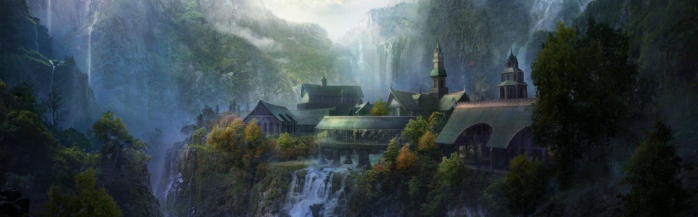
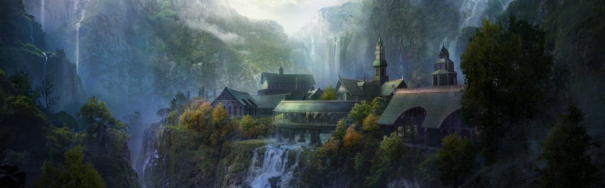

Mordor
Siedziba Saurona. Jej szczegółowe opisy znajdują się we Władcy Pierścieni. Zamieszkiwali ją słudzy Saurona, m.in. orkowie, trolle i Nazgûle. W kraju tym znajdowała się forteca Saurona, Barad-dûr oraz Orodruina, wulkan, miejsce wykucia Jedynego Pierścienia. W północno-zachodniej części Mordoru, pomiędzy Ephel Dúath i Ered Lithui, wypiętrzał się płaskowyż Gorgoroth. Była to kraina pustynna i jałowa. Pośrodku niej wznosiła się Orodruina. Na wschód od wulkanu, u podnóża Ered Lithui, Sauron zbudował twierdzę Barad-dûr. W czasie Wojny o Pierścień Gorgoroth była miejscem kuźni i kopalń Saurona, gdzie produkowano broń i zbroje dla jego armii. Frodo Baggins i Samwise Gamgee przechodzili przez nią, kiedy usiłowali dojść do Orodruiny.
Minas Tirith
stolica Gondoru od 1640 roku Trzeciej Ery. Minas Tirith wznosiło się na wysokość trzystu metrów ponad równiną. Leżało na siedmiu poziomach, każdy z nich otoczony był własnym murem. Mur pierwszego poziomu był czarny, zbudowany w czasach świetności Numenorejczyków, prawdopodobnie z tego samego materiału co wieża Orthanku. Mury pozostałych poziomów były zbudowane z białego kamienia.Za bramą Cytadeli (siódmy poziom) znajduje się plac z fontanną, gdzie rosło Białe Drzewo. Cytadelę wieńczyła Biała Wieża, mierząca 50 sążni (ok. 100 m) i mieszcząca m.in. salę tronową, pomieszczenia dla straży oraz komnatę, gdzie przechowywany był palantír. Na tym poziomie wznosił się też pałac królewski, Wielka Sala Uczt oraz dom, w którym zamieszkał Gandalf i Pippin w czasie ich pobytu w mieście.

Rogaty Grod
Forteca położona była na południu Rohanu. Zbudowana, aby strzegła wejścia do Helmowego Jaru. Była najpotężniejszą twierdzą Rohanu. Legenda głosiła, iż nigdy nie zostanie zdobyta, jeśli jej obrońcami będą ludzie. W czasie Długiej Zimy obronił ją król Helm Żelaznoręki, odpierający ataki Easterlingów i Dunlendingów, którzy podówczas zajęli cały Rohan. Tam też umarł i był pierwotnie pochowany. Później w czasie Wojny o Pierścień twierdza została zaatakowana przez siły Isengardu i doszło do wielkiej Bitwy o Rogaty Gród. Rogaty Gród był stolicą Zachodniej Marchii i siedzibą Drugiego Marszałka Marchii.
Shire
Leżał w Eriadorze, w granicach Arnoru. Jego nazwa w westronie to Sûza. Shire leżało na szlaku Wielkiego Gościńca Wschodniego, lecz hobbici nie wykazywali zainteresowania tym, co działo się poza granicami ich kraju. Pod koniec Trzeciej Ery bezpieczeństwo hobbitów zapewniali Strażnicy Północy.

Rivendell
Siedziba Szarych Elfów i Elronda, znajdująca się w górskiej okolicy pomiędzy Eriadorem i Górami Mglistymi. W mitologii Śródziemia odgrywa rolę bezpiecznego miejsca, w którym pielęgnuje się tradycje i dawną wiedzę. Rivendell nazywane było również Ostatnim Przyjaznym Domem na Wschód od Morza. Utworzone zostało przez Elronda Półelfa, który władał nim od Drugiej Ery świata. Leżało w górskiej dolinie, chronione rzeką Bruineną oraz magią Elronda. Do osady można było dostać się przez wąski most, stanowiący jeden z najbardziej rozpoznawalnych elementów krajobrazu.
Moria
Najstarsza i największa z krasnoludzkich siedzib w Śródziemiu. Zaraz za Ereborem najważniejsze i najsłynniejsze miejsce w społeczności tej rasy. Miała postać zespołu kopalń, komnat i szybów położonego w podziemiach Gór Mglistych. Jedyne wyjścia stanowiły Bramy Morii.Miasto znajdowało się w podziemiach Gór Mglistych nieco na północ od Lothlórien. Górowały nad nim i z daleka znaczyły jego położenie trzy szczyty: Celebdil, Fanuidhol i Caradhras. Pod Caradhrasem przebiegała Przełęcz Czerwonego Rogu, jedna z dwóch znanych naziemnych przepraw przez góry.
Szara Przystan
Szara Przystań – miasto i port Círdana, znajdujące się w Zatoce Lhûn (Lune), założone przez elfy z Beleriandu w pierwszym roku Drugiej Ery. To stąd elfy, w tym Elrond i Galadriela, a także ostatni Powiernicy Pierścienia odpływali Prostą Drogą ze Śródziemia na początku Czwartej Ery. Znana również jako Mithlond.
Erebor
Góra w północno-wschodnim Rhovanionie, królestwo krasnoludów, jedna z siedzib plemienia Durina. Pod górą odnaleziono bogate złoża minerałów i kontynuowano prace kopalniane. Najcenniejszym klejnotem był tzw. Arcyklejnot, Serce Góry. Wielka góra, położona na równinie rozciągającej się na wschód od północnej części Mrocznej Puszczy, w niewielkiej odległości od Długiego Jeziora. Stanowiła charakterystyczny punkt Rhovanionu. Od jej głównego masywu odchodziło sześć długich ramion. Z wnętrza góry wypływała Bystra Rzeka – Celduina.

Lorien
Laurelindórenan – królestwo elfów znajdujące się w Śródziemiu, po wschodniej stronie Morii, nad Celebrantem. Jego władcami byli m.in.: Galadriela i Celeborn. Królestwo Lothlórien zostało założone przez Leśne Elfy w Pierwszej Erze. Podczas Wojny o Pierścień królestwo było schronieniem i jednym z niewielu miejsc, gdzie wciąż żyły elfy. Dotarli do niego członkowie Drużyny Pierścienia, gdzie spędzili długi czas, odpoczywając i pocieszając się po stracie Gandalfa.